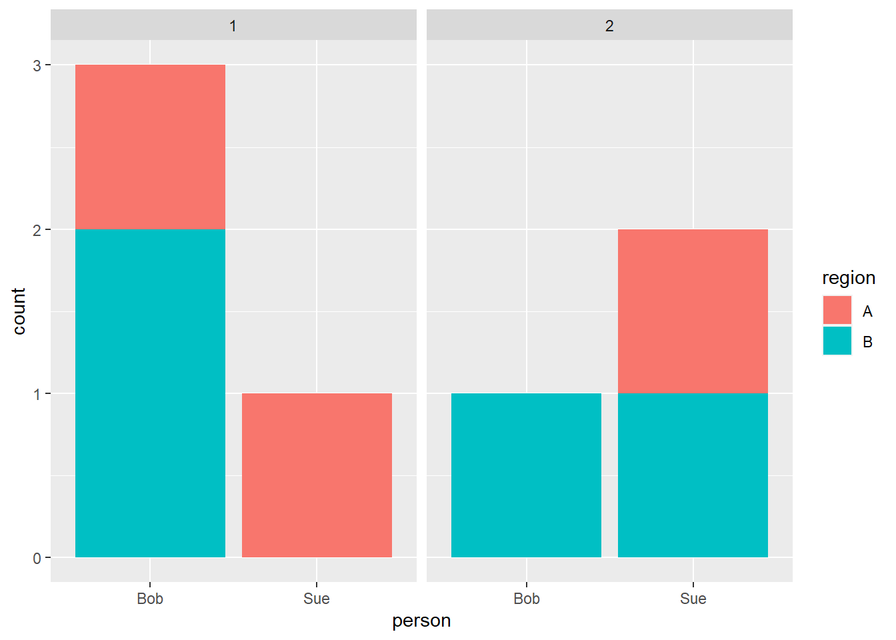
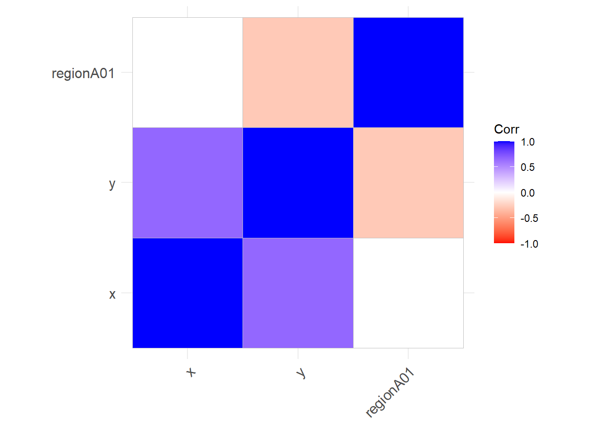
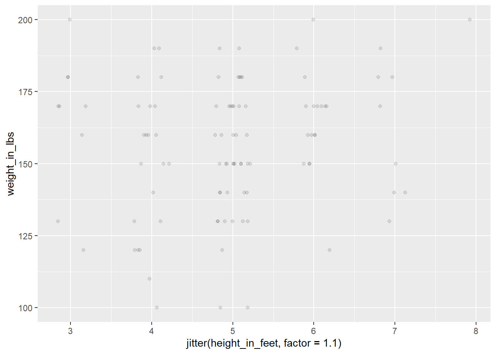
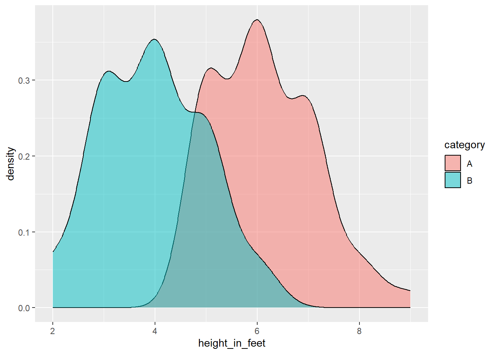
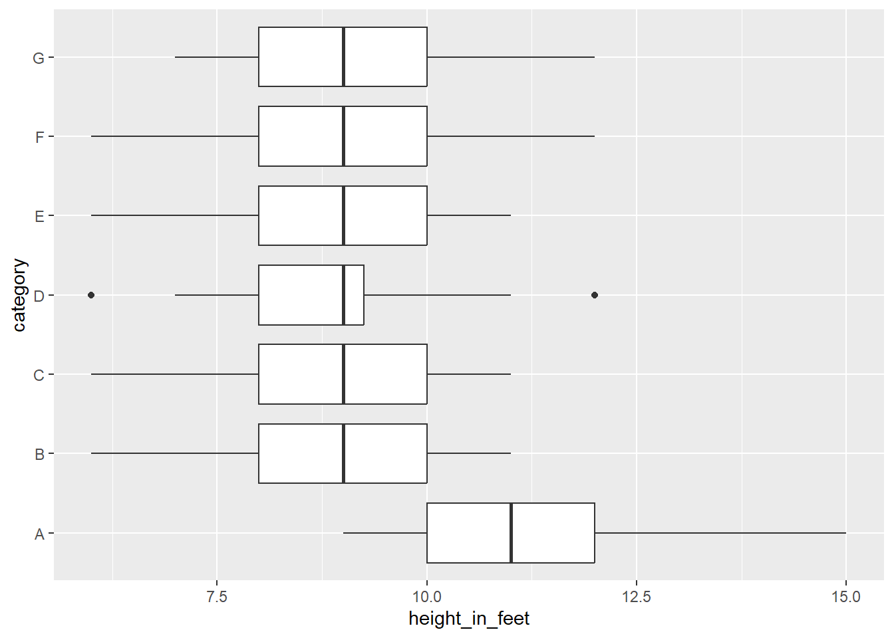

This corresponds to the DataCamp Exploratory Data Analysis in R course.
It helps us understand how multiple variables are related to each other.
Marginal: the chance that of an event happening.
Example: what are the chances of a heads on a coin flip, given that we
had just had a head. It is still 50%.
Conditional: If A, then the proportion of B changes.
Example: If a person is a man, then they are more likely to be tall.
Categorical data is generally stored as text values. They can be encoded with numbers, but there should be no significance to the range between different values.
Examples of categorical data would be:
Start by evaluating for bad categories or na values.
library(tidyverse)
# Bad tibble
t_raw <- tibble(
person = c('Bob', 'Bob', 'Bob', 'Sue', 'Sue', NA, 'Su'),
group = c('Group A', 'Group B', 'A', 'a', 'b', NA, ''))
# Fixes stored as data, rather than code.
t_fix = tibble(
from = c('Group A', 'Group B', 'A', 'a', 'b' ),
to = c('a', 'b', 'a', 'a', 'b')
)
# Simple fixes
#
# Clean up with filter / mutate
# Use !is.na to only return fields with values
# Use "" to filter for blank fields
# Use mutate and ifelse to convert from bad values to good values
t1 <- t_raw %>%
filter(!is.na(person),
!is.na(group),
group != '') %>%
mutate(person = ifelse(person == 'Su', 'Sue', person))
# Join fix
t2 <- t1 %>%
left_join(t_fix, by = c('group' = 'from')) %>%
mutate(group = to,
to = NULL)
print(t2)## # A tibble: 5 × 2
## person group
## <chr> <chr>
## 1 Bob a
## 2 Bob b
## 3 Bob a
## 4 Sue a
## 5 Sue bRemove or group low-count items. View both absolute count and proportions
library(tidyverse)
# Change printout to simplify output
options(scipen = 999, digits = 3)
t <- tibble(x = c('Bob', 'Bob', 'Bob', 'Sue', 'Sue', 'Dave', 'Bob'),
region = c('A', 'B', 'B', 'A', 'A', 'B', 'C'))
# Print normal table
table(t$x, t$region)##
## A B C
## Bob 1 2 1
## Dave 0 1 0
## Sue 2 0 0# remove
t_fixed <- t %>%
filter(!x %in% c('Dave', 'Bob'))
# Print table of % (of total)
# For 2nd argument,
# NA: % of total
# 1: % of row
# 2: % of column
prop.table(table(t$x, t$region))##
## A B C
## Bob 0.143 0.286 0.143
## Dave 0.000 0.143 0.000
## Sue 0.286 0.000 0.000Bar charts are very useful for categorical data. You can show the basic value as the x or the y, and then use color or facets to break down further categories.
library(tidyverse)
t <- tibble(person = c('Bob', 'Bob', 'Bob', 'Sue', 'Sue', 'Sue', 'Bob'),
region = c('A', 'B', 'B', 'A', 'A', 'B', 'B'),
year = c(1, 1, 1, 1, 2, 2, 2))
ggplot(data = t) +
geom_bar(mapping = aes(x = person, fill = region)) +
facet_wrap( ~ year)
Continuous data is numeric information, where the difference between values is meaningful. You can typically measure this data at different levels of precision (ie., age in years, age in months, age in days, …)
Examples:
We often have to clean up values.
Start by looking at the data with a histogram to get a general idea of its shape. Think about if it appears to have a normal distribution.
You may have to eliminate outlier values, or add a log transform to the data.
library(tidyverse)
# Generate a normal distribution of data
t_raw <- tibble(id = 1:100,
height_in_inches = rnorm(n = 100, mean = 5.5*12, sd = 12))
# Eliminate outlier values
t <- t_raw %>%
filter(height_in_inches > 50,
height_in_inches < 90)
# Or, set outlier values to a max or min value to avoid removing them from the dataset.
t <- t_raw %>%
mutate(height_in_inches = ifelse(height_in_inches < 50, 50, height_in_inches),
height_in_inches = ifelse(height_in_inches > 90, 90, height_in_inches))
ggplot(data = t) +
geom_histogram(mapping = aes(x = height_in_inches))We often have issues with variables having a lot of zeros. We can convert that into a yes/no variable. Sometimes it is more important to have a yes/no variable than an actual amount.
library(tidyverse)
# Generate a normal distribution of data
t_raw <- tibble(person_id = 1:10,
amount_won_in_game = c(0, 0, 0, 0, 0, 100, 200, 140, 20, 0))
# Create yes/no
t <- t_raw %>%
mutate(winner01 = ifelse(amount_won_in_game > 0, 1, 0))
table(t$winner01)##
## 0 1
## 6 4We typically want to understand cause and effect in our dataset.
Cause/effect is typically started with some type of correlation table. However, we have to be careful about blinding trusting this table. It can be very misleading, as well as require some setup.
library(tidyverse)
t_raw <- tibble(x = c(0,0,0,0,0,0, 1, 1, 1, 1, 1, 1 ),
y = c(10, 10, 9, 8, 7, 9, 10, 100, 20, 100, 80, 28),
region = rep(c('A', 'B'), times = 6))
# Fix region by converting it into a 01 value.
t <- t_raw %>%
mutate(regionA01 = ifelse(region == 'A', 1, 0))
# It's usually good to make a tibble for the cor test with only numeric values
t_numbers <- t %>%
select(where(is.numeric))
# Show all figures
cor(t_numbers)## x y regionA01
## x 1.000 0.663 0.000
## y 0.663 1.000 -0.277
## regionA01 0.000 -0.277 1.000The cor.test function will show the statistical significane of any correlations you find.
library(tidyverse)
t_raw <- tibble(x = c(0,0,0,0,0,0, 1, 1, 1, 1, 1, 1 ),
y = c(10, 10, 9, 8, 7, 9, 10, 100, 20, 100, 80, 28),
region = rep(c('A', 'B'), times = 6))
# Fix region by converting it into a 01 value.
t <- t_raw %>%
mutate(regionA01 = ifelse(region == 'A', 1, 0))
# It's usually good to make a tibble for the cor test with only numeric values
t_numbers <- t %>%
select(where(is.numeric))
# Show the correlation's statistical significance
cor.test(t_numbers$x, t_numbers$y)##
## Pearson's product-moment correlation
##
## data: t_numbers$x and t_numbers$y
## t = 3, df = 10, p-value = 0.02
## alternative hypothesis: true correlation is not equal to 0
## 95 percent confidence interval:
## 0.143 0.896
## sample estimates:
## cor
## 0.663ggcorrplot is a nice library for printing correlation tables
library(tidyverse)
library(ggcorrplot)
t_raw <- tibble(x = c(0,0,0,0,0,0, 1, 1, 1, 1, 1, 1 ),
y = c(10, 10, 9, 8, 7, 9, 10, 100, 20, 100, 80, 28),
region = rep(c('A', 'B'), times = 6))
# Fix region by converting it into a 01 value.
t <- t_raw %>%
mutate(regionA01 = ifelse(region == 'A', 1, 0))
# It's usually good to make a tibble with only numeric values
t_numbers <- t %>%
select(where(is.numeric))
# Show the correlation's statistical significance
ggcorrplot(cor(t_numbers),
colors = c('red', 'white', 'blue'))
After we see a connection between our variables, you should plot the relationship.
Point plots are pretty good for small to mid-size datasets. However, we will get issues with overplotting. There are two general mitigations:
library(tidyverse)
# Generate a normal distribution of data
t <- tibble(height_in_feet = round(rnorm(n = 100, mean = 5, sd = 1), 0),
weight_in_lbs = round(rnorm(n = 100, mean = 150, sd = 20), -1),
)
ggplot(data = t) +
geom_point(mapping = aes(x = jitter(height_in_feet, factor = 1.1),
y = weight_in_lbs),
alpha = 0.1)
At a certain point, you should shift to a density plot, which is basically a nicer histogram.
library(tidyverse)
# Generate a normal distribution of data
t <- tibble(height_in_feet = round(rnorm(n = 100, mean = 5, sd = 1), 0),
category = rep(x = c('A', 'B'), time = 50))
# Make the plot more interesting by changing group A
t <- t %>%
mutate(height_in_feet = ifelse(category == 'A', height_in_feet + 1, height_in_feet - 1))
ggplot(data = t) +
geom_density(mapping = aes(x = height_in_feet,
fill = category),
alpha = .5)
At a certain point, you should shift to boxplots. Add both a x and y scale, and use facets as needed.
library(tidyverse)
# Generate a normal distribution of data
t <- tibble(height_in_feet = round(rnorm(n = 700, mean = 10, sd = 1), 0),
category = rep(x = c('A', 'B', 'C', 'D', 'E', 'F', 'G'), time = 100))
# Make the plot more interesting by changing group A
t <- t %>%
mutate(height_in_feet = ifelse(category == 'A', height_in_feet + 1, height_in_feet - 1))
ggplot(data = t) +
geom_boxplot(mapping = aes(x = height_in_feet,
y = category))